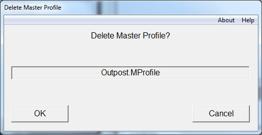

Deleting a Master Profile
|  |
| Fig. 10 -- Confirm or Abort the Deletion of a Master Profile and all of its Progeny |
Deleting an existing Master Profile requires choosing one in the dialog box and selecting the Delete Button. You get one more chance to abort with another dialog box but after confirmation (Selecting OK) of the delete the Master Profile will be gone (see Fig. 10).